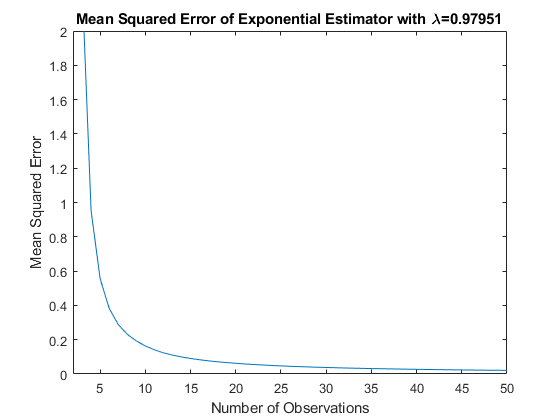
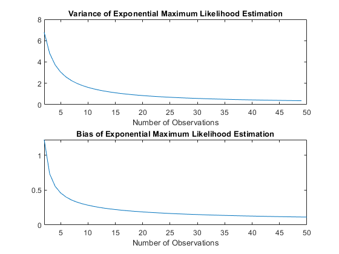
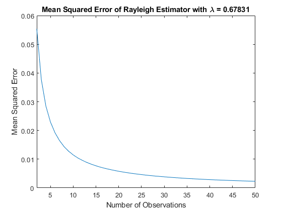
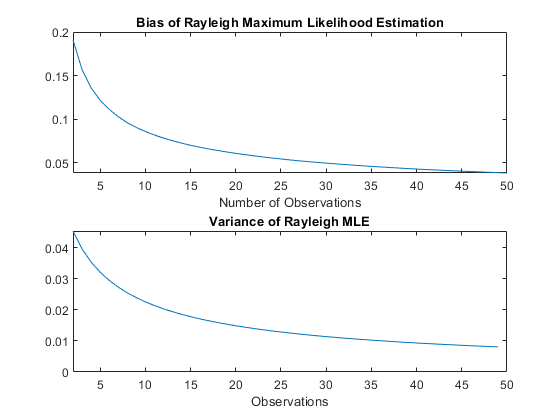
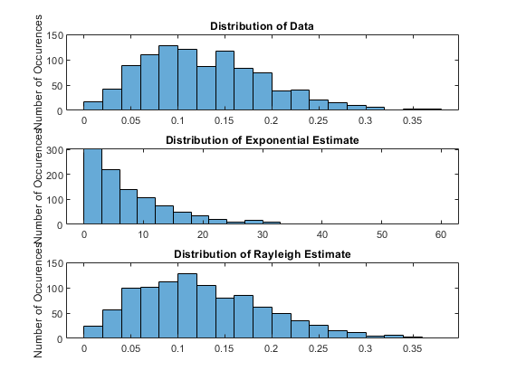

Contents
Stochastics Project #2
Omar Thenmalai
num_observations = 50; num_iterations = 100000; observation_vector = 2:1:num_observations;
Part 2: Exponential Distribution Estimator
lambda = rand(); % Generate a random lambda data = exprnd(1/lambda, [num_iterations, num_observations]); % Generate the data using 1/lambda sumdata = cumsum(data, 2); % Use the cumulative sum to vectorize the summation sumdata(:, 1) = []; % Only start consideration from the second observation mle_exponential = observation_vector ./ sumdata; % Get the exponential MLE estimate mse_exponential = mean((lambda - mle_exponential) .^2, 1); % Get the MSE of the estimate % Plotting MSE of the exponential distribution estimator figure; plot(observation_vector, mse_exponential); title(['Mean Squared Error of Exponential Estimator with \lambda=',num2str(lambda)]); ylabel('Mean Squared Error'); xlabel('Number of Observations'); xlim([2 num_observations]) ylim([0 2]) % Plotting the exponential distribution estimator variance figure; subplot(2, 1, 1); variance = zeros([1, num_observations-2]); % Create a zero vector for the variance for observation_number = 2:1:num_observations-1 variance(1, observation_number-1) = mean(var(mle_exponential(:, 1:observation_number))); % Take the cumulative variance of the MLEs as more data is observed end plot(observation_vector(1:end-1), variance); xlim([2 num_observations]) title('Variance of Exponential Maximum Likelihood Estimation') xlabel('Number of Observations'); % Plotting the exponential distribution estimator bias bias = mean(abs(lambda-mle_exponential), 1); % bias is the mean of the absolute value of the difference between lambda and the estimates subplot(2,1,2); plot(observation_vector, bias); xlim([2, num_observations]); title('Bias of Exponential Maximum Likelihood Estimation') xlabel('Number of Observations'); 
Part 2: Rayleigh Distribution Estimator
close all; lambda = rand(); data = raylrnd(lambda, [num_iterations, num_observations]); % Generate the data for the Rayleigh MLE sumdata = cumsum(data .^2 / 2, 2); % Create a vector for the summation sumdata(:,1) = []; % Start from the second observation mle_rayleigh = sqrt(sumdata ./ observation_vector); % Get the Rayleigh MLE mse_rayleigh = mean((lambda-mle_rayleigh).^2, 1); % Get the MSE of the estimates % Plotting the MSE of the Rayleigh distribution estimator figure; plot(observation_vector,mse_rayleigh); title(['Mean Squared Error of Rayleigh Estimator with \lambda = ',num2str(lambda)]); ylabel('Mean Squared Error'); xlabel('Number of Observations'); xlim([2 num_observations]); % Plotting bias of Rayleigh MLE figure; subplot(2,1,1); bias = mean(abs(lambda-mle_rayleigh), 1); % bias is the mean of the absolute value of the difference between lambda and the estimates plot(observation_vector, bias); xlim([2, num_observations]); title('Bias of Rayleigh Maximum Likelihood Estimation') xlabel('Number of Observations'); % Plotting variance of Rayleigh MLE subplot(2,1,2) variance = zeros([1, num_observations-2]); for observation_num = 2:1:num_observations-1 variance(1,observation_num-1) = mean(var(mle_rayleigh(:,1:observation_num))); % Take the cumulative variance of the MLEs as more data is observed end plot(observation_vector(1:length(observation_vector)-1), variance); xlim([2, num_observations]); title('Variance of Rayleigh MLE') xlabel('Observations'); 
Part 3: Max-likelihood estimate of parameter for exponential and Rayleigh distributions
load data.mat; % Load the data for the original distribution observation_vector = 1:1:length(data); mle_exponential = observation_vector ./ cumsum(data); % Exponential MLE based on the data mle_rayleigh = sqrt(cumsum(data.^2 / 2)./observation_vector); %Rayleigh MLE based on the data % Plotting the data figure; subplot(3,1,1); histogram(data); % Plot the histogram of the original data title('Distribution of Data'); ylabel('Number of Occurences'); % Plot of the exponential distribution; subplot(3,1,2); histogram(exprnd(mle_exponential(length(data)),size(data))); % Plot the histogram of the exponential MLE title('Distribution of Exponential Estimate'); ylabel('Number of Occurences'); % Plotting of the Rayleigh distribution subplot(3,1,3) histogram(raylrnd(mle_rayleigh(length(data)),size(data))); % Plot the histogram of the Rayleigh MLE title('Distribution of Rayleigh Estimate'); ylabel('Number of Occurences'); % The given data was generated using a Rayleigh distribution. % The given data was used to find an exponential MLE and a Rayleigh MLE. % These estimates were then put back into their respective Matlab % distribution. % When plotted and compared to the plots of the original data, the Rayleigh % distribution seems to match the original data better than the the % exponential distribution.